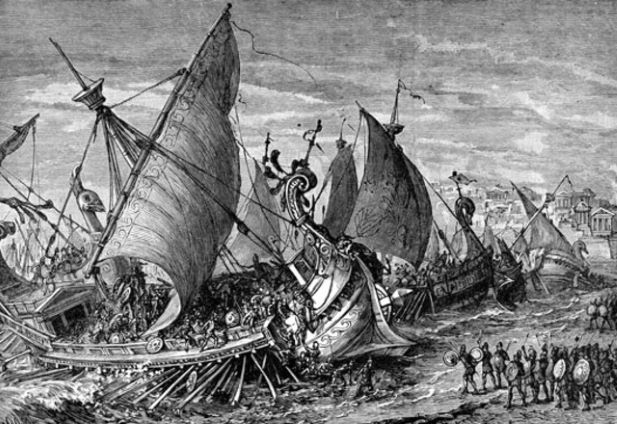
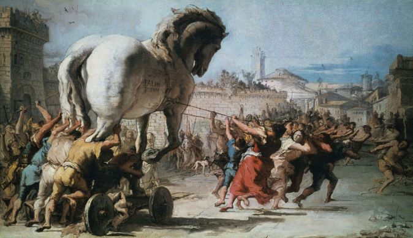

"The roaring seas and many a dark range of mountains lie between us." - Homer
"Sing, O muse, of the rage of Achilles, son of Peleus, that brought countless ills upon the Achaeans" - Homer

"Any moment might be our last. Everything is more beautiful because we're doomed. You will never be lovelier than you are now. We will never be here again" - Homer
"Hateful to me as the gates of Hades is that man who hides one thing in his heart and speaks another." - Homer